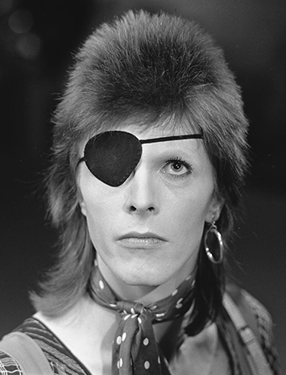
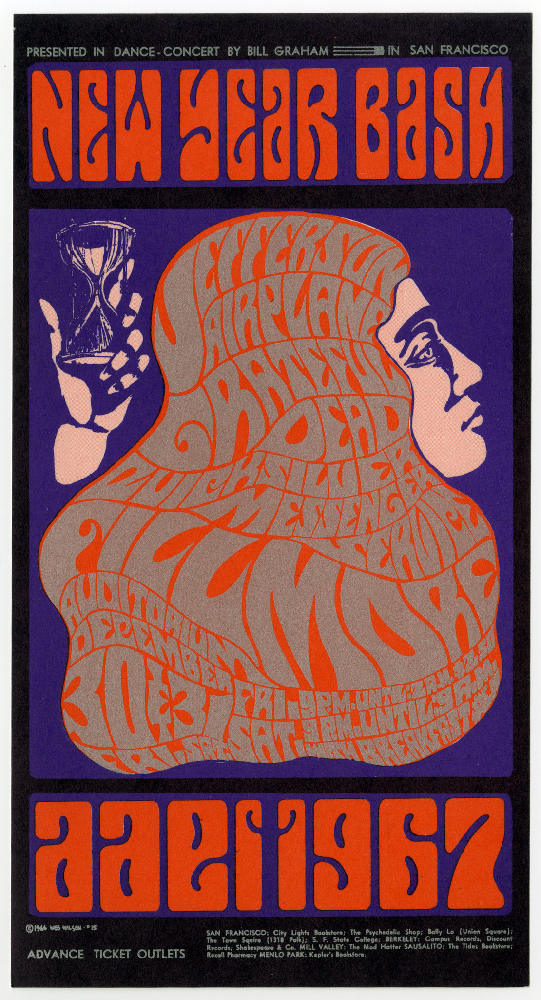
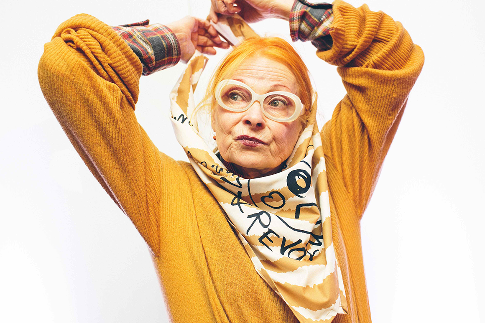

My Inspiration
These are a few artists that I look up to!

David Bowie was a well known musician, I listen to his music
when I need inspiration. Not only did he have great music, but he also
painted well, was a great actor, and was a fashion icon.

Wes Wilson was a pioneer for psychadelic rock posters in the late
60's and early 70's. He has inspired me to experiemnt with my designs as well as find
ways to push the societal norms.

Vivenne Westwood was a fashion designer that fought her way into the industry.
With her unconventional designs, she inspired me to be myself and not give into the pressure of
society.